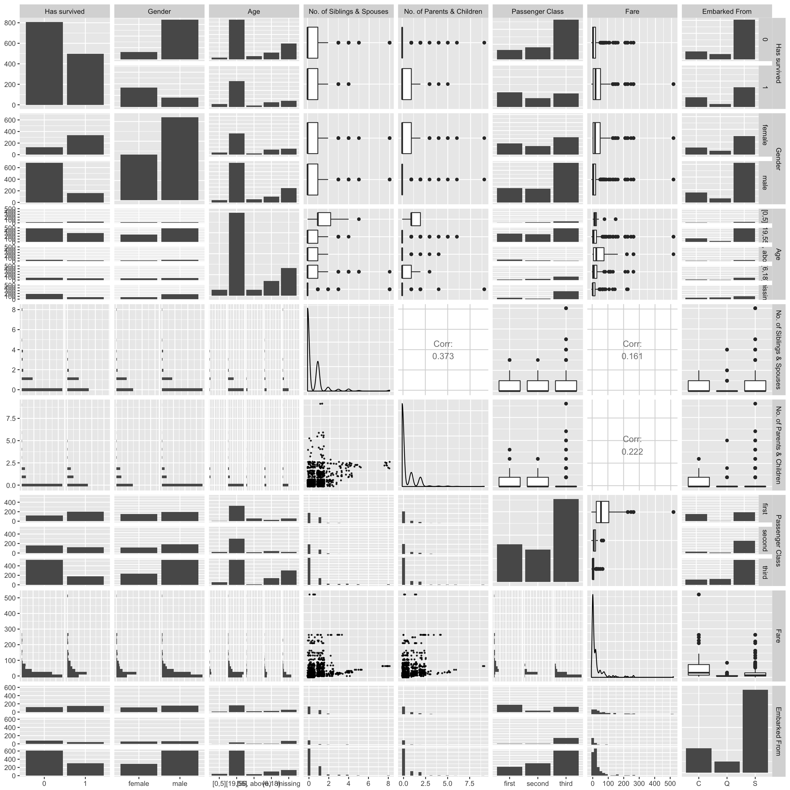

Section 1 Data Exploration
1.1 Summary
The data set contains information about 1306 passengers on the Titanic. Recall that there were around 2,200 people on the ship so with this sample size, clearly the data set is a good representation of the population on the Titanic. There are 11 variables in the original data set, listed as follows:
| Name | Type | Unit | Meaning | Value/Range | Remark |
|---|---|---|---|---|---|
| survival | nominal | previous name of county | 0 = No, 1 = Yes | ||
| name | nominal | passenger’s name | |||
| pclass | ordinal | ticket class | 1 = 1st, 2 = 2nd, 3 = 3rd | We can use this as a proxy for socio-economic status (SES) | |
| sex | nominal | passenger’s gender | m = male, f = female | ||
| age | numerical | year | passenger’s age | [0,80] | |
| sibsp | numerical | person | number of siblings/spouses aboard the Titanic | [0,8] | siblings = brother, sister, stepbrother, stepsister; spouses = husband, wife (mistresses and fiances were ignored) |
| parch | numerical | person | number of parents/children aboard the Titanic | [0,6] | parents = mother, father; children = son, daughter, stepson and stepdaughter (some children travelled only with nanny, therefore parch = 0 for them) |
| ticket | nominal | ticket number | |||
| fare | numerical | pound | ticket fare | [0, 93.5] | |
| cabin | nominal | cabin number | |||
| embarked | nominal | port of embarkation | C = Cherbourg, Q = Queenstown, S = Southampton |
1.2 Variable Selection
Our response variable is the nominal variable survival (or boolean as its outcome is 0 or 1). As for explanatory variables, we have to make some pre-selection beforehand. We decide to take out several variables which we consider only as identifier variables, such as name and ticket number. Also we did not include the cabin number since this information is missing for too many passengers. The only value it brings to the model is when we can actually compute the shortest distance from each cabin to the rescue area. However, again as mentioned, there are a lot of missing data and also, if distance is our only concern, then passenger class is quite sufficient for this purpose (refer to the cross-section plot of the Titanic in previous section).
1.3 Data Preparation
We notice that age is missing for many passenger, but age is such a crucial variable that we cannot simply take away. As such, we discretize age into several bins: missing, 0-5, 6-18, 19-55, and 56 and above. Also, we rename the variables for readability. So the final model we obtained has the following variables:
| Name | Type | Unit | Value/Range |
|---|---|---|---|
| has_survived | nominal | 0 = No, 1 = Yes | |
| passenger_class | ordinal | 1 = 1st, 2 = 2nd, 3 = 3rd | |
| gender | nominal | male, female | |
| age | nominal | year | [0,5], [6,18], [19,55], [56 and above], missing |
| number_of_siblings_and_spouses | numerical | person | [0,8] |
| number_of_parents_and_children | numerical | person | [0,6] |
| fare | numerical | pound | [0, 93.5] |
| embarked_from | nominal | C = Cherbourg, Q = Queenstown, S = Southampton |
1.4 Final Data Set Summary
Following is the summary of the final data set:
## has_survived
## 0 1
## 808 498## gender
## female male
## 464 842## age
## [0,5] [19,55] [56, above) [6,18] missing
## 56 790 57 140 263## Min. 1st Qu. Median Mean 3rd Qu. Max.
## 0.0000 0.0000 0.0000 0.3859 0.0000 9.0000## Min. 1st Qu. Median Mean 3rd Qu. Max.
## 0.0 0.0 0.0 0.5 1.0 8.0## passenger_class
## first second third
## 321 277 708## embarked_from
## C Q S
## 270 123 9131.5 Correlation Investigation
Following, we create a plot matrix to investigate potential colinearity between variables in our data set.

As seen above, it seems that there might be some colinearity between gender and passenger_class as female and male groups have very different first class to third class ratio. Also, notice that passenger_class and embarked_from seem to have some strong association, for example, there seems to be more third class passenger embarking from Southampton than that of other embarkation ports. As for now, we will take note of these observations; we will use them later for a more vigorous feature selection process as we attempt to improve our model.